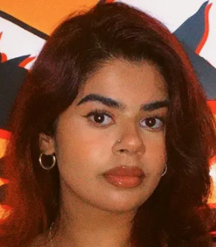

My name is Helia Moosavi, I’m 21 years old and I live in Sydney. I moved to Australia when I was 14 from Iran and very grateful to have created a new life in Australia! One of my favourite things to do is working out and feeling strong! The gym is my favourite place as I can take my mind off things and focus on myself! I also like to paint every now and then even though I might not be the best painter! I have two cats named Kitty and Pablo and I love them so much!! Surprisingly I used to not be a big fan of cats a couple of years but after adopting my cats my opinion has complete changed! .
